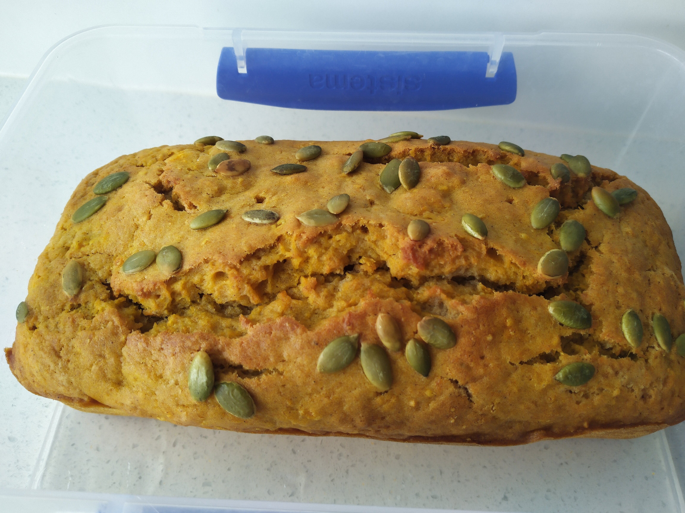

Pumpkin Gingerbread

Preheat oven to 180 degrees
Grease loaf tin
400gpumpkin
Steam peeled pumpkin for 10 mins
Mash pumpkin until smooth
2 cupsSR flour1/2 cupsugar2 tspground ginger1 tspmixed spice
Combine SR flour , sugar, ground ginger and mixed spice in bowl
2eggs1/2 cupcanola oil1/2 cupmilk
Whisk eggs, canola oil and milk in jug
Add egg mixture to flour
Add pumpkin and combined with wooden spoon
Bake for 1 hour, until skewer comes out clean
Serve with maragine and honey